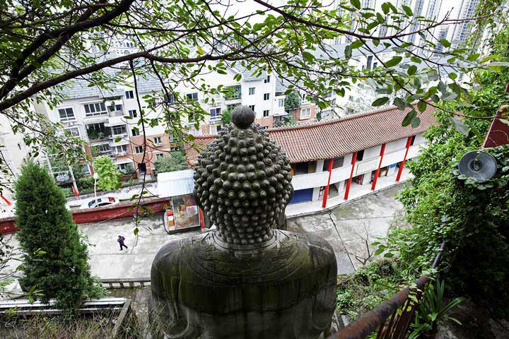

我就地站在河水切割成的一个岩石平台（这样的平台有许多）上观看忙碌的苦力队伍为庞大的帆船船队装货卸货，帆船上满载东部、北部和西部的各种物产。一队队搬运工人，辛苦地背着未压实的棉花的白色巨大坤包，登上长长的阶梯，十分引人注目，远看就像一大群蚂蚁背着自己的蛋一样……眼前的情景与自己这许多日子身临其境的宁静的大自然景色又形成了强烈对照。
——阿尔博尔德•约翰•立德，1883年4月7日

20世纪30年代的长江三峡江段。如今，三峡的自然景观已经发生根本改观。
在阿尔博尔德•约翰•立德生活的时代里，他是极少数敢于冒着生命危险乘坐小船穿越长江上游的欧洲人。1883年，他乘船从上海出发，逆流而上，于3月18日抵达三峡的东部入口，开始了渴望已久的三峡之行。那段辛苦的旅行费去了整整三个星期，立德夫妇和船员倍尝艰险，才于4月7日抵达目的地。英国人当天在日记里生动地记载自己到达重庆港口那一刻看到的景象和复杂心情。
131年后，一个雾气蒙蒙的早晨，我们从重庆郭家沱码头登上了一条滚装船。这是一艘载重量超过3000吨的庞然大物。在四层楼高的客舱前部，可以俯瞰近30米长的超级卡车一辆接一辆在码头上排成长队，然后在船员的指挥下，依次通过一块让人捏一把汗的跳板，驶入船舱，停在指定位置上。卡车上停满了重庆长安汽车厂和美国福特公司合资生产的轿车。滚装船上将走一条和立德相反的路线，从重庆直下宜昌。抵达三峡大坝后，这些门上贴着变形金刚图案的货车将驶出滚装船，从那里沿着长江中下游平原上四通八达的公路网络，把福克斯和蒙迪欧轿车送到南京或上海的长安福特4S店。
完成第一次三峡之旅后，立德两次发起造船计划，希望设计出适合在三峡和川江航道上进行商业运输的轮船。1898年，他驾驶蒸汽轮船“利川”号驶往重庆。这是三峡航道上出现的第一条蒸汽机船。
如今，乘坐滚装船从重庆到宜昌的下水航程只需要36个小时，上水航程耗时也不过50个小时。立德生前无论如何都不可能想象这种速度。1898年，他驾船从宜昌前往重庆的实际航行时间为11天，加上通过各种关卡时耽误的时间和修理船只的时间，总共耗时21天。即使是装有蒸汽发动机的新式轮船，遇到滩险流急，也需要纤夫拉纤上摊。为“利川”号拉纤的纤夫最多达到300人，而绞滩一直持续到三峡水库蓄水前。
1898年初，立德夫妇驾驶“利川”号蒸汽轮机木船从宜昌上溯至重庆，开辟了三峡现代航运业。
所谓绞滩，是用粗绳牵引上水船只，利用设置在江岸上的绞盘收紧绳索，带动船只逆水驶过水流湍急的浅滩。今天的乘客完全无法体会这种困难重重的行程。从宜昌到重庆的航道，已经变成了水流缓慢、深达一百多米的河流型水库。
立德生活的时代里，工业革命的成就已经在英国和其他西方国家产生了一种持续进步的豪迈情绪，让自然界为人类的福利服务的观念日渐流行。但无论如何，那个年代的想像相对于人类在20世纪获得的技术能力而言，仍然是极其有限的。立德不可能设想这种场景：修建一个世界上最大的水库，淹没三峡周边的所有乡村和城镇，以造就一条深水航道；他也不可能相信，狭窄、艰险和困难重重的三峡航道，有一天竟然会通行载重量达到几千甚至上万吨的货船。
航行于宜昌和重庆之间的大型滚装船到2006年之后才出现，它们直接受益于三峡水库三期蓄水（坝前水位至156米）。长江上游的航运业由此经历了一段非常特殊的发展时期。运力增长之快、获利之丰，在中国内河航运的全部历史上恐怕也属罕见。2008年之前，3000吨级别的滚装船造价为900万元左右，船主两年就可以收回投资。惊人的赢利能力吸引了大量资金，新船不断下水，投资者蜂拥而至——我们乘坐的大船就是这个时期的产物。
但重庆到宜昌段的水运价格今非昔比。船到丰都的时候，两位管事和一干水手在驾驶舱里大发牢骚。9月1日，也就是我们上船当天，郭家沱码头再次调低了运价，导致这一趟下水航程的收入比上一趟减少了2万多元。滚装船的运价正迅速逼近赢利和亏损的临界点。但船东们别无选择。千万吨级的轮船耗资巨大，一旦下水，即使面临亏损，也必须保证航行，以免错过下一个赢利周期。
船上的管事和水手大多是中年人，许多人以前在从长江中上游航行的客轮上工作。他们见证过时代兴衰，深深知道何为新陈代谢：在短短15年里，有几千年历史的三峡和川江客运就完全败落了，其地位被公路运输所取代。
尽管重庆境内的第一条高速公路到1995年才通车，但到2013年底，高速公路通车里程已经达到了2312公里。到2017年，这个数字预计将达到3000公里。这些高速公路以重庆为中心，构成了环状、放射状和南北走向的跨省通道。
立德是典型的维多利亚时代的英国人，野心勃勃，不屈不挠。立德夫人同样富于冒险精神，她曾在中国发起不缠足会，鼓励女子打破禁锢。立德夫妇写作了数本关于中国的书籍，书中照片大多是立德夫人拍摄的。
在1883年的旅行中，立德一路考察沿江的官道和山间小道。前者年久失修，成了帝国丧失治理能力和进取精神的象征，后者的险峻数次令他在山间陷入进退两难的绝望境地。当地水手回头寻找他，牵着他的手，才将他一步步从峭壁上重新带回停泊在江边的帆船上。立德赞叹水手们的敏捷，感谢他们的忠诚。但到了1887年，立德准备驾驶蒸汽机船“固陵号”进入三峡时，正是因为湖北的船老大和水手抗议而不得不放弃。人们担心开辟轮船航道会导致帆船船主、水手和纤夫失业。9年后，立德驾驶“利川”号上行的时候，沿途不断遭到攻击。清政府派出一艘炮船、一只救生船和12名士兵、6名水手护送“利川”号。在巫山和云阳，立德两次遇险，几乎葬身火海。特别是云阳，“利川”号被当地船户包围，突围时撞翻两艘渔船，导致6人死亡。
现代轮船和传统木帆船之间的职业竞争导致的悲剧，为立德的成功蒙上了阴影。在他之后的100多年间，长江上游的航运一直受制于地理环境和当地就业市场的双重影响。任何试图开辟和发展现代航运的尝试，都必须小心处理与本地和传统航运业的关系。但高等级公路的出现引入了一个前所未有的外部因素，彻底扭转了水上运输内部的竞争格局。
重庆和宜昌之间的水上客运，现在萎缩到只剩下极少数游轮和快艇。货运目前还有一定优势。开着长达30米的大型货车在长江两岸的高速公路上行驶，让人精神高度紧张。幽深的隧道、超长桥梁、急弯和超过10公里长的下坡路段随处可见，如果碰上雨雪天气，最有经验的司机也视之为畏途。相比之下，只要不赶时间，对伙食不过于挑剔，滚装船堪称舒适。对从事跨省运输的长途司机来说，选择乘船，不但可以节省1000元左右费用，还有难得的两天休息时间。
在公路之外，中国还试图沿长江构建东西向的高速铁路走廊，但三峡的地理条件再次成为天然险阻。成都至重庆之间的高铁已经开通，重庆至万州的高速铁路预计将于2016年通车，但2010年通车的宜昌至万州段铁路，运行时速只能达到120公里至160公里。宜（昌）万（州）线从1909年开始修建，詹天佑设计的线路沿江筑路，全长160公里，三峡蓄水后，现线路放弃了沿江路线，改为取道湖北恩施，穿越鄂西山区，全长337公里，其中228公里为桥梁和隧道。由于施工难度太大，这段线路修建时间长达7年。
相对于这条铁路线长达100年的修建历史，7年时间已经快得令人瞠目结舌。但在过去15年里，中国人已经适应了一种全新的、高速运转的生活。令人目眩的快速变化变成了生活常态，就其规模而言，也许是工业革命以来最大的。
立德面临的商业风险主要来自中国不稳定的政局，战争带来的破坏，以及市场分割和官僚腐败导致的普遍和严重的衰退。古老的市场体系也不能为先行者提供冒险的资金和其他支持。在1883年漫长的三峡之旅当中，立德反复抱怨，这种危险的航道随时可能导致货船倾覆，而商业保险的覆盖范围有限，赔付的条件也相当苛刻。换句话说，立德面对的主要问题是中国缺乏变化。这个问题如今不复存在。相反，现在的问题是变化太快。随航运之利迅速扩张的是古老的商业风险。三峡的游戏规则已经发生了巨变，并且仍然在快速的变化之中。
就这个国家辽阔的国土、丰富的自然资源和勤劳的人民而论，情况本该是这样。目前缺乏这种正常条件，是由于下列人为障碍造成的：
（1）闭塞、落后的交通状况；
（2）采矿和其他企业令人沮丧的经营状况，如果引进先进方法，可以为居民提供就业机会；
（3）重叠的内地税收关卡。——阿尔博尔德•约翰•立德，1888年，《扁舟过三峡》序言
立德笔下的三峡沿岸城市给人的印象主要是衰败和凄凉。太平天国战争摧毁了好些城镇，四川的人口和经济都损失严重，到1883年，这个地区还没能恢复元气。公共设施缺乏有效的管理，纤道破败倾颓，却无人发起维修。地方士绅的精神萎靡不振，受过教育的官员和商人阶级似乎将在鸦片烟雾中耗尽心力，而底层社会受制于贫穷、饥饿和疾病。
大坝修建后，立德看到的三峡已经发生了永久性的改观，随之改变的是这一地区的经济结构和行为。水上航行不再惊心动魄、耗时长久，位于西陵峡中部的三峡大坝坝前水位常年保持在145米以上，由此向西660多公里的航道两岸，高峡和峭壁已经消失，航行变得沉闷无聊。浮现在水面的是一个接一个的山顶，两岸的群山间则是持续扩张的城市。
2014年10月，万州长岭垃圾处理场的污水。随着城市在三峡两岸的群山间扩张，城市基础设施也出现在山谷间。
在万州，一位建筑设计师说，开发中最困难的部分是打地基和建护坡，这部分工程最多可能占到开发成本的四分之一。即便如此，城市仍然不断扩张。2012年，万州城区人口已经超过60万，城市规模超过130平方公里。考虑到当地的地形崎岖不平，适合建筑的大多在河流两岸的狭长地带，这已经相当惊人。
扩张并不限于万州这类区域中心城市。县城和乡镇也在艰难却不断地从高山和河流的夹缝中获取土地。挖掘机挖开山体，然后用泥土填平斜坡，造出一块又一块大小不一的平地，以兴建更多的高楼和工业园区。
凤鸣镇距离云阳县城约10公里，谭言琼正在那里盖宾馆。那天下午，他在大雨中穿过一片泥泞的空地，站在宾馆未来的大堂门口，指着空地上一个入口说，这里将修建广场和地下商场，宾馆对面和左侧是大片已经封顶的公寓楼，右侧是从云阳通往湖北省利川县的公路。利川县位于神农架，是著名的旅游目的地。宾馆将为途经凤鸣镇的旅游团提供住宿。
谭言琼个头不高，穿着内地中年男人身上常见的淡灰色西裤和条纹短袖polo衫，腰带上别着一串钥匙。他的话不多，看上去颇为内向。第一次见面的时候，他开着一辆黑色的国产SUV，下雨的时候习惯性地把裤脚卷到脚踝以上。
谭言琼的宾馆目前还是堆满装修材料的工地，到处都露出粗粝的水泥立柱，但他成竹在胸，边走边仔细介绍一楼门面的用途，装修的风格、材料和造价，以及大理石地面和钢窗的品质。在三楼一间带有露台和麻将房的豪华套房里，他突然蹲到地上，用手摸了摸钢窗的缝隙。雨水从那里渗进室内，在墙面上留下了一块潮湿的痕迹。
当着我们的面，谭言琼立刻拨打了一通电话。就在电话接通的一瞬间，这个温和的中年男人的状态突然完全变了。他提高声音，愤怒地斥责装修工程的质量，就像我们不在场一样。他的语气和眼神会提醒我们，他在这个世界上取得的一切，都是日复一日不屈不挠的争取、计较、坚持和斗争的结果。他有着不可动摇的决心，随时准备捍卫自己的利益。
谭言琼的发家史充满了偶然。他解释说，对像他这样没有背景和资源的人来说，能取得今天的成就，“只能靠吃苦”。所谓“背景和资源”，他进一步解释说，就是“家里有人当官、做生意，起码是在外面工作”。
年轻的时候，谭言琼离开云阳故乡，像个流浪汉一样，在广东、湖北、江西、浙江各省打工，到80年代末，他已经发现，靠出卖体力为生难以有出头之日。四处打工的经历告诉他，逆转命运的唯一出路是做生意。他回到老家卖米豆腐。这种拌上红油和葱末食用的米粉凉皮，至今仍然在三峡地区流行不衰。在重庆、万州和各个县城的街头巷尾，总能看到一些中年人，带着米豆腐担子，或站或坐，等待顾客上门。
如果没有后来的机遇，谭言琼本来是他们中的一员，很可能会以卖米豆腐终其一生。但只过了一年，三峡的变迁开始在他的个人经历中扮演关键角色。
1990年，谭言琼把多年来的积蓄借给一位跑船的亲戚，跟他到宜昌去搞汽油。到了石油公司门口，亲戚让谭言琼在门口等，自己进去办货。汽油运到云阳后，谭言琼很快拿到了人生中第一次分红：300元。接着是第二次：200元。他不但立刻发现了其中的商机，也很快表现出决断和精明。他向别人借了几千块钱作本钱，很快自立门户。
他的生活因此变得像一场冒险。买家不断扩大，不但包括私人，也包括企业和政府机关。交通限制了三峡地区的能源供应。1992年，全国人大代表表决通过了建设三峡工程的决议，库区县市开始移民搬迁，汽油紧缺，连公安机关也必须向私人买油。
谭言琼的生意越来越好。装在200升大铁桶里的汽油，从宜昌、武汉、潜江、荆门，不断运往三峡各县。很多年之后，谭言琼才知道这种运输方式有多么危险。在艰难的三峡航道和颠簸的公路上，汽油在油桶里不断碰撞，随时可能发生爆炸。
回顾起这段往事，他突然笑了，“那时候只想挣钱，也不知道厉害。现在绝对不敢了。”
他说得很随便，有一种苦尽甘来的轻松。生意带来的并不仅仅是钱。不管他的汽油卖多么贵（这很容易招来不满），大家不得不承认，如今他不再是卖米豆腐的小贩，而是个“有资源”和有本事的人。
25年来，谭言琼的所有生意都是三峡工程巨大辐射效应的一部分，尽管他本人并不总是意识到这一点。他从卖汽油起家，后来卖润滑油、卖挖掘机配件。在持续十几年的三峡工程建设期间，移民－清库－搬迁－重建，一期接一期，土建工程几乎没有穷尽，进度很快，链条的每个环节都绷得很紧。如果你正好在这个链条上，就像谭言琼这样，就会发现改变命运的机会。
 如果没有三峡工程带来的巨变，谭言琼可能不会成为一名成功的商人，而是以做小摊贩为生。
如果没有三峡工程带来的巨变，谭言琼可能不会成为一名成功的商人，而是以做小摊贩为生。
如今，谭言琼的事业重心再次从水上转移到地上。他在老家凤鸣镇修建的这座宾馆高4层、拥有50多个房间、总面积达到6000平方米。
一个多世纪之前，立德乘船沿着三峡溯江而上的时候，他已经注意到在中国人对财富的态度里，土地和建筑扮演着至关重要的角色。他多次接受邀请，在峡谷两岸的山坡上参观富人的宅院，欣赏其中四时常青的盆栽和美味的柑橘：这些庭院寄托了那个时代的人们对成功和幸福的理解。谭言琼并不轻视资本，但在他看来，钱是靠不住的，坐落在故乡凤鸣镇上的这座宾馆，对家庭和财富的传承而言更为重要。他用一种规划人生的口气说，自己所做的一切，只是为了“留一点资产给子女”。
在初秋的大雨中，宾馆周围那些没有完工的新式小区陷入泥泞当中，但小镇并不因此显得萧条。所有商品房都预售一空，买家不但来自本镇，也有县城居民。
仅仅10年前，人们还无法想象，长江两岸群山中的小镇上会有这么多高层电梯公寓楼。至少在外观上它们与大城市里的公寓楼没有任何区别。城市生活方式普及的速度令人瞠目。对此，谭言琼的态度非常矛盾。
社会资本——也即谭言琼口中的的“背景和资源”——在很大程度上影响了中国的商业模式。而上世纪九十年代确是一个充满机会的例外。
谭言琼遇上了一个混乱和野心勃勃的时代，规则和桎梏突然都消失了，体制的缝隙无处不在，他这样没有“背景和资源”的农民，也可以凭着胆色和运气白手起家。和100多年前那个决心要驾驶蒸汽机船在三峡上航信的那个英国人一样，谭言琼执拗、坚决、野心勃勃，但他绝没有立德那种一往无前的历史观念。
立德相信人类会不断进步，未来总是比现在更文明、更进步，很多人都有一种正在通往黄金时代的信心，而谭言琼甚至同情地认为，他的孩子不可能再碰上他自己经历过的那个时代。那个拥有更多可能性的时代，只是昙花一现。唯一值得欣慰的是，自己的努力将足以保证他们过上与父辈完全不同的生活。
物质层面的改善只是第一步。和我见过的很多有过类似经历的中年人一样，尽管正值年富力强，谭言琼已经在考虑财富的传承安排。他有三个孩子，对他们的未来，他的设想很简单：会读书就去从政，不会读书就去经商。他用略带羡慕的口吻提起大女儿：她目前在一所985大学读书，有一批往来密切、同样优秀的同学。在谭言琼的眼里，当她离开校园的那一天起，必定将拥有他自己终生歆羡却无法得到的“背景和资源”。
穿过一段短短的峡谷，便进入万县山谷。峡谷上方有一座美丽的寺庙钟鼓楼，登上寺庙的平台（供流动剧团做敬神演出用），看见一座三层的亭子，整个寺庙建筑精良，四周特别干净。从阶地再向前，便可见到城镇及下面繁忙的港口。
——阿尔博尔德•约翰•立德，1883年3月29日
立德对中国人的宗教精神感觉很矛盾。他隐约觉得，迷信和强烈的世俗性格同时制约着中国人的精神世界，他们对繁杂多样的神祇表现出不加区别的敬畏，同时又强烈抵制西方传教士（很多是立德的同胞）宣扬的基督教义。经济的衰败导致寺庙失去经济来源，出家人逐渐丧失了为普通人提供精神抚慰和指引他们从超越性维度来看待生活的权威。为了维持生活，他们有时候甚至与骗子和乞丐无异。这让立德对寺庙和道观的印象不佳，但位于宜昌和重庆之间的万县钟鼓楼似乎是一个例外。万县秩序良好，经济比三峡地区的其他城镇稳定，寺庙仍然能发挥其在中国社会结构中的传统功能，并与世俗生活保持合理得当的距离。
我们在一个傍晚进入万州。那里有一座能给人留下深刻印象的建筑，坐落在城市北部高山的山顶上。黄色的琉璃瓦和高耸的宝塔如此醒目，以至于很难不把它与立德笔下那座美丽的寺庙钟鼓楼联系起来。
第二天，我们被告知，北山顶峰上的寺庙是弥陀禅院，其前身正是钟鼓楼。和不断扩张的万州新城一样，弥陀禅院是一座新庙。七层高的巨塔雄踞殿堂一侧，是整个万州最为醒目的建筑。从远处望去，塔和寺庙相依而生，融为一体，俯瞰着长江和江边不断生长的高楼。
如果说这幅和谐的风景中有什么不协调的地方，那就是庙和塔的所有权分属两个不同的实体所有。说起这件事，程泽芬没有预兆地哭了起来。她拍着自己的腿，几乎是喊着说，“以前我那么漂亮，现在都成老太婆了”。
陈泽芬夫妇和万州政府及弥陀禅寺的纠纷已经持续十年以上。
难以想象15年前的程泽芬是什么样子。她和丈夫从1985年开始经商，到1990年代末，他们已经是万县小有名气的房地产开发商。尽管财富不能让人永葆青春，但要不是卷入到钟鼓楼搬迁以及随之而来的经年累月的纠葛当中，程泽芬夫妻应该还在继续着房地产商的人生，并且从三峡后时代快速增长的城市规模中获利。程泽芬也许会显得年轻一些。
1999年，也即三峡二期移民开始三年之后，当地政府的一位官员到程泽芬夫妇家里看望他们。这是一次充满感情的、个人色彩浓厚的拜访，目的是说服程泽芬夫妇承接钟鼓楼搬迁项目。
一系列政府公文提到当时搬迁钟鼓楼面临的巨大困难。搬迁评估中，钟鼓楼获得的补偿仅为85万元，加上中国佛教协会另外资助67万元，远远不敷重建所需。重建地址选在北山观。这里曾经是一处著名的道教寺观，当时是万县福利工厂的所在地。仅购买地皮，就需要240万元。在程泽芬夫妇介入之前，万县市政府曾为此项目招商，但未成功。
这次拜访之后不久，2000年3月，程泽芬夫妇答应出资开发弥陀禅院（钟鼓楼如今的名称）。作为回报，程泽芬夫妇将获得寺庙若干年的经营权，以及在寺庙内兴建一座祈福塔，用于开发塔葬。
投资远超最初的估计，最后花去了3000多万元。但塔葬的生意开局不错。程泽芬相当满意，她甚至觉得，卖骨灰格位比卖房子好，市场很稳定，不会受制于政策变化，后续服务还会源源不断地带来收入。
2003年，三峡水库蓄水至135米，万州老城被淹没。寺庙和城市的关系随之被割裂。
2003年，135米水位线下的库区人口搬迁完毕。一座新的城市在老万县城背后的山顶上初现轮廓。移民搬迁最艰难的时间已经过去了。万州区政府突然提出，要把祈福塔陵园迁出城区。这个剧情逆转的故事代表了三峡搬迁过程中最戏剧性的一幕。
政府态度的转变在文件中显露无遗，但立场前后矛盾，令人迷惑。程泽芬保留的十几份政府文件中，仅有两处提到搬迁原因。2011年的一份文件说，“千福塔陵园修建于万州区北山居民区的显著制高点，不符民风民俗，已严重影响到城市景观和当地的人居环境”。但民政局2003年致区政府办公室的公函中，却称陵园“既不占用耕地，又不影响城市景观”，在列举了北京、上海、香港、纽约等城市在闹市区亦有骨灰安葬陵园的案例后，文件还说，万州人大代表、政协委员每年关于殡葬改革的议案、提案近30件，但没有一件要求祈福塔搬迁。作为万州民政局的上级，重庆市民政局也反对搬迁，在答复前者的咨询时，重庆市民政局以不容商议的口吻说，“完全没有必要搬迁。若当地政府硬要搬迁，一切经济责任和法律责任由当地政府承担”。“正是基于重庆市民政局的这种态度，万州区民政局在公函中明确说：“我局意见倾向于不予搬迁”。
上述2011年的文件称，除购地款外，程泽芬夫妇名下的协发公司共投入3740万元，用于建设弥陀禅院和祈福塔陵园，其中2500万元来自万州商业银行的贷款，至今尚欠本金2495万元，利息2500万元。
千福塔及其裙楼中共有两万多个安放骨灰的格位，已有600多人安葬于此，加上预售，总共卖出去5000多个格位。塔葬的生意已经今非昔比。2003年下半年，陵园要搬迁的传闻不胫而走，这里从此门庭冷落。因经营状况不佳，2008年，陵园与寺庙发生冲突。在政府和佛教协会的协调下，协发公司获得了弥陀禅院30年的旅游经营权，程泽芬夫妇拥有千福塔陵园的全部所有权和经营权。
克果法师被重庆市佛教协会派来处理庙塔之争。达成协议之后，克果法师留下来暂时住持弥陀禅院，本拟找到继任者就回重庆市佛教协会。由于千福塔陵园搬迁事宜长期悬而未决，他至今无法脱身。
作为一个出家人，克果法师对寺庙和本人的处境，表现出与身份匹配的耐心。但他也向我们出示了一份文件。文件说，弥陀禅院原规划有斋堂和佛教工艺品厂，但由于移民时间紧、资金紧张，未能兴建，现欲申请三峡库区移民后续项目建设资金3209.4万元，增建两处建筑，以增加寺院自养能力。文件的落款是弥陀禅院管委会。
 弥陀禅院中的巨大佛像俯瞰万州市貌。这座寺庙位于万州周边的制高点上。
所有人都希望能够终结寺与塔的分离与争斗。克果法师希望弥陀禅院能够恢复其作为宗教活动场所的本色，以接续和弘扬钟鼓楼和弥陀寺的传统。他觉得，这一切要以寺庙摆脱经济上依赖于千福塔陵园的局面为前提。程泽芬夫妇同样无心恋战，他们希望迁出陵园，远离此地，从头再来。他们面前的唯一障碍是迟迟无法与区政府达成搬迁补偿协议。
2011年万州区民政局的搬迁方案提出，把弥陀禅院30年经营权和千福塔陵园及其附属资产打包，由政府先行托管，在对外招商或拍卖，所得款项，全部用于搬迁，不足部分由财政补贴。文件甚至设想，如果招商不利，可由政府投资平台（公司）接管。
程泽芬夫妇拥有的资产和权益评估价值为1.8亿元。前重庆市委书记薄熙来在万州听取关于此事的报告后，曾指示万州区以2亿元的价格了结此事。由于薄熙来不久后落马，搬迁一事再次搁置。
3年又要过去了，克果法师和程泽芬夫妇还在等待最后的决定。
7000万年之前，燕山山脉抬升，形成巫山和一系列褶皱山脉。这些山脉由西南－东北走向转向东西走向，地势由南向北逐渐降低，与巴山之间形成一个相对低洼的地带，古长江沿此东流，切割那些石灰岩、页岩和砂岩构成的山体，最终形成三峡。
1883年，立德第一次乘坐帆船游历三峡，4年后，他在英国购置的“固陵”号在上海组装完毕后，驶入宜昌，等待进入三峡的许可。由于湖北和重庆船帮的反对，他驾驶蒸汽机船在三峡的首航时间推后了12年。1891年，重庆开埠，立德创办了重庆第一家外商洋行，创办猪鬃厂，第二年，创办运输公司和保险公司。1898年他驾驶“利川”号达成夙愿，6年后又取得江北厅50年的煤铁开采权。到1908年，立德才返回英国故乡，并于两年后去世。
1992年，中国决定兴建三峡工程，5年后，一道堤坝按照计划将长江从中截断。2003年，仍然在不断升高的大坝放下闸门，开始蓄水，2006年，大坝建成，又过了3年，坝前水位上升至175米。将近100年来，在长江上建大坝的设想一直充满了争议，三峡工程建成并没有终结争议，反而使争议变得更为尖锐。三峡改变了成千上万的中国人的命运，让一些人梦想成真的同时，让另一些人陷入了幻灭。
立德在中国度过了冒险家的一生。很难用今天的道德标准去评价他这样充满野心、探索欲望和执著精神的人物。和立德经历过的那个时代一样，如今，整个世界都重新处在一个一切都在进行之中、一切尚无定论的时期。用来衡量这个时代好坏的标尺如此之多，但能给出圆满答案的却几乎没有。
对一座寺庙而言，人事倏忽即逝。能缘法师、宁安师太、克果法师乃至程泽芬夫妇，他们和在钟鼓楼留下匆匆一瞥的立德一样，都只是时间中的过客。佛法把兴盛、衰败和纷争都归之于因缘和合，水陆兴替，城乡消融，塔寺争端固然如此，沧海桑田也不例外。
我一直记得9月初的某个早上的场景。我正在祈福塔下的平台上眺望长江和远处层层叠叠的高山，一个灰衣僧人匆匆向我走来。他拒绝了在摄像机前陈述往事的邀请，却向我们展示了一张盖着红色圆形公章的文件。
如今的三峡航道波澜不兴，人事兴革则给人随波逐流的印象。立德想象和争取过的一切，已经加倍变成现实，谭言琼的苦涩记忆和艰难的创业过程，也得到了回报，但他对现实的不确定性所怀有的忧惧，某种程度上正体现在程泽芬夫妇的遭遇上。但又该怎么解释克果法师的遭遇呢？他本来是四川自贡粮食系统一名普通员工，出家时已经四十多岁，2001年才在峨眉山受戒。这个和尚来到万州不但是一个偶然，简直是一个谜。
“我前生大概是钟鼓楼里的小和尚，”他开玩笑说，“因为修行不力，此生才又来到了这里。”